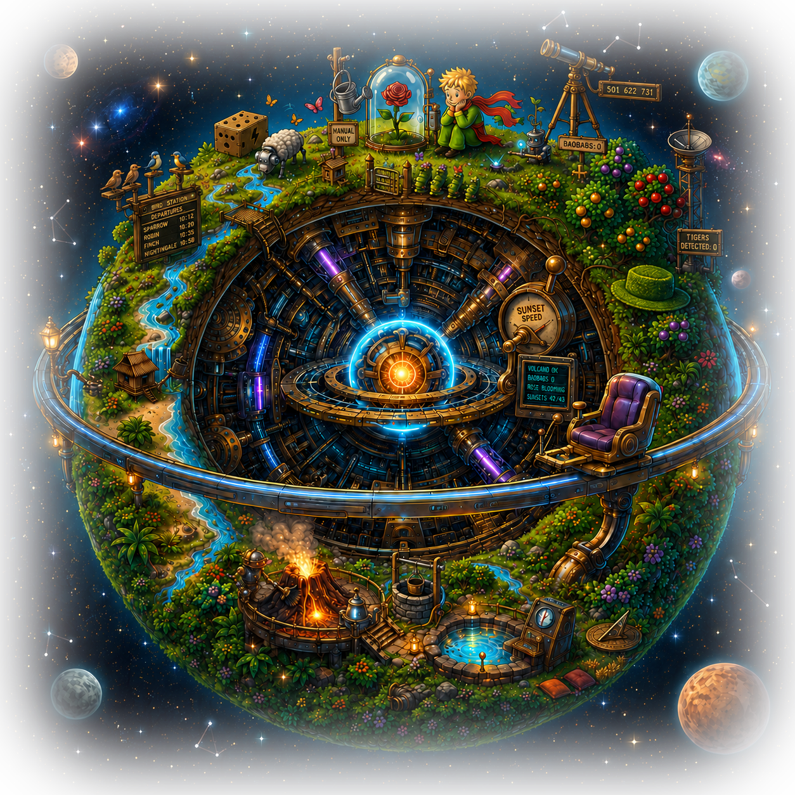

Сайты и сервисы под ключ — в короткие сроки
Fullstack-разработка, усиленная AI-агентами: от идеи до продакшена за дни, а не месяцы. Каждое окно справа — реальный проект. Наведите и кликните — сайт откроется, его можно полистать.
Работы
От финтеха и недвижимости до гастрономии и фэшна — каждый сайт открывается живьём прямо внутри витрины.

«Есть время любоваться прекрасным»
Маленький принц вернулся на свою планету и полностью её автоматизировал: вулканы очищают роботы, баобабы ликвидируют ещё в зачатке команда агентов — а принц теперь круглые сутки любуется и ухаживает за своей прекрасной Розой.
Вдохновившись его примером, я автоматизировал все процессы разработки приложений и сайтов: AI-агенты берут рутину, я отвечаю за архитектуру, качество и результат.
Кто я такой?
По образованию — программист с математическим уклоном (НГТУ — ФПМИ):
Берусь за задачи любой сложности, закрываю полный цикл: frontend + backend + deploy. Отдельно люблю нетривиальные кейсы, где готового решения нет.
Расскажите про задачу — верну план и смету за день
© 2026 Александр Вострухин · lacoming · собрано вручную — от дизайна до деплоя